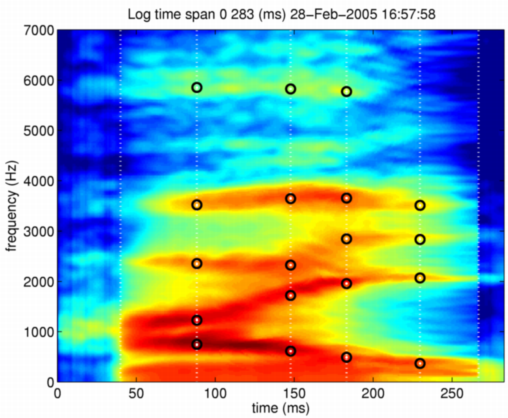
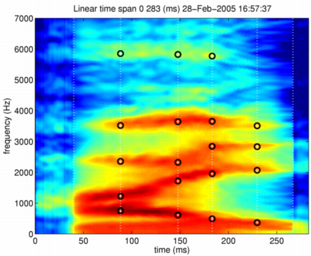

| | STRAIGHTパラメタと特徴点の情報を用いるモーフィング | Contents | Index |
時間軸を整合させた混合法を拡張し、周波数軸の変換を加えると、現在の モーフィングの実装となります。 今回の開発は順を追って積み上げているので，さらに拡張することも、 デバッグも簡単になることを期待しています。 ここで開発する関数はtimeFrequencySTRAIGHTmorphingです。 使用方法は、前の節と同じです。 違いは，この関数が特徴点の全ての情報を使っていることだけです。 以下の操作により、logでの比率0.5のモーフィングが実行され、 モーフィングにより作られたスペクトログラムと特徴点が表示されます。 また、その時の音声も合成されます。
mObjectdmy = timeFrequencySTRAIGHTmorphing(neutralHai,angryHai,0.5,'log'); displayMobject(mObjectdmy,'anchorTimeLocation','Log'); axis([0 283 0 7000]) syneu = executeSTRAIGHTsynthesisM(mObjectdmy);
図に、スペクトログラムと特徴点を示します。 モーフィングされた特徴点が、 モーフィングによって作られたスペクトログラムの特徴点として 妥当な場所に設定されていることが分かります。 これで、ICASSP'2003で発表したモーフィングの手続きが、 新しい枠組みの上に実装されたことになります。 モーフィングで作られたMオブジェクトから合成された音声も、 これまでのものよりも自然なものになっています。

混合法をlinearにしたものも図示しておきます。

これで、最初の目的が達成できたことになります。 まず、Mオブジェクトさえ用意してあれば、自由にモーフィングを行うことができるようになりました。 プログラムも、最初から書き直して、段階的に拡張することにより、見通しの良いものとすることができました。 改良等の提案を歓迎します。
| | STRAIGHTパラメタと特徴点の情報を用いるモーフィング | Contents | Index |